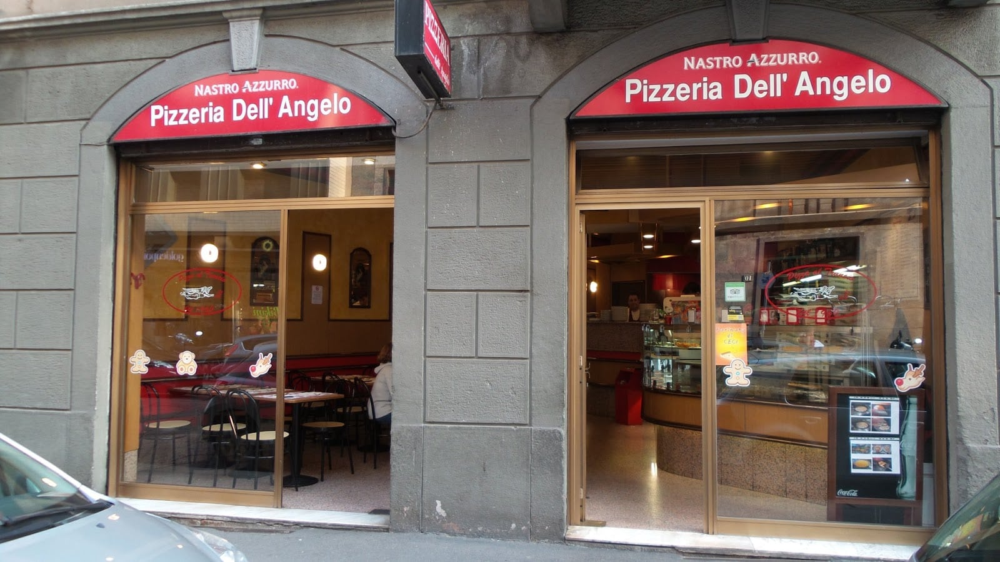
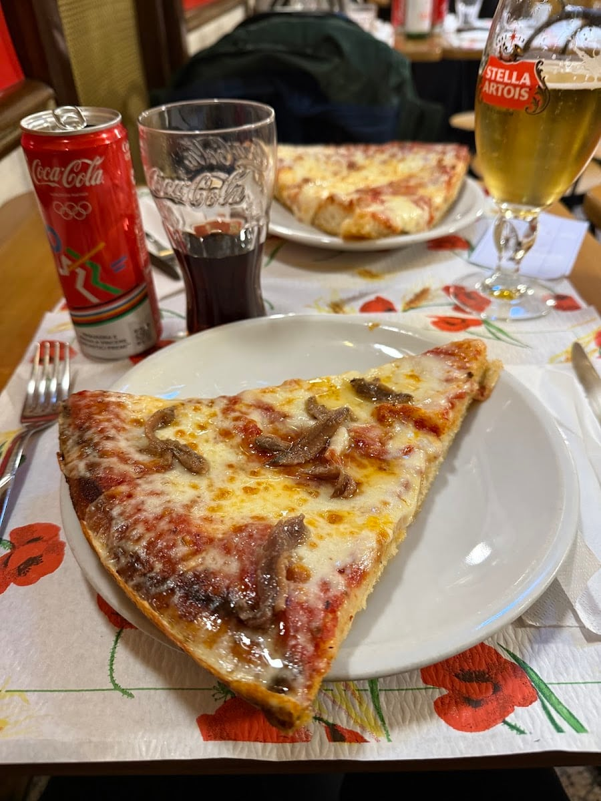
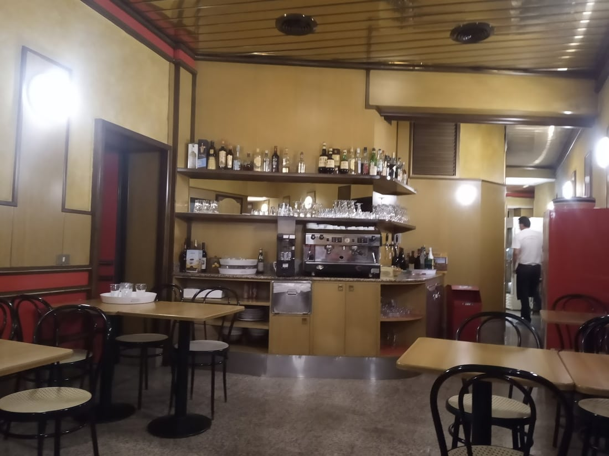
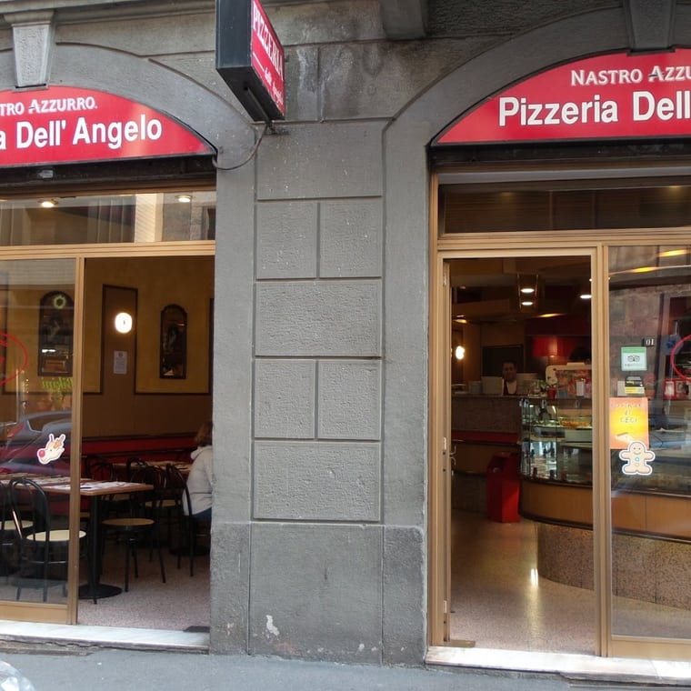
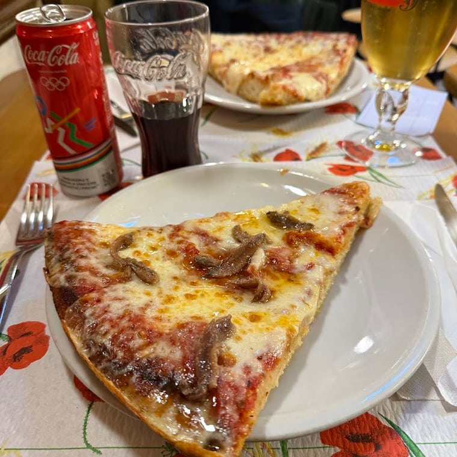
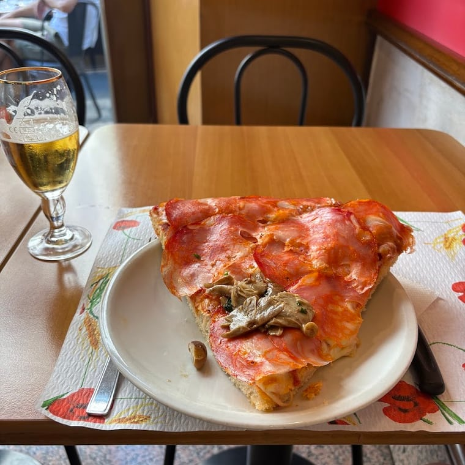
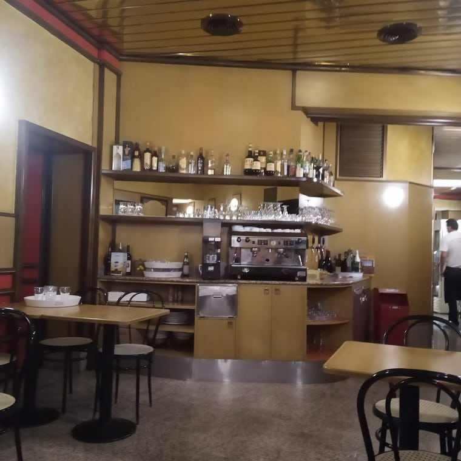

4,4 · 653 recensioni
La pizza al trancio, dal 1960
Pizzeria dell'Angelo
Il trancio milanese croccantino e morbido, regolare o abbondante, in un locale sincero rimasto com'era. In Corso Vercelli, per molti la migliore di Milano.

Il trancio
Croccantino e morbido
La classica pizza al trancio milanese: croccantina fuori e morbida dentro, con un pomodoro davvero buono e un bel ripieno. La scegli regolare o abbondante e la arricchisci con gli ingredienti dal menu appeso all'ingresso.
Tranci goduriosi e soddisfacenti, come una volta. «La migliore di Milano», dicono quelli che la frequentano da anni.
Il locale
Fermo agli anni '80
Un posto rimasto fermo nel tempo — e per fortuna. Ambiente sincero, senza fronzoli, con tutta la genuinità dei locali di una volta: qui si bada alla sostanza, non all'apparenza. Un tuffo nel passato.
E oltre alla pizza, i piatti che sorprendono: farinata, castagnaccio, trippa e goulash. Cucina di casa, servita col sorriso.

Le foto
Uno sguardo dentro




Dicono di noi
4,4 ★ su 653 recensioni
«Posto sincero aperto da decenni, specializzato nella classica pizza al trancio milanese. L'ambiente è in stile anni '80, davvero unico: sembra di fare un tuffo nel passato.»
Alessandro L. · Local Guide
«Tranci di pizza goduriosi, soddisfacenti, croccantini e morbidi allo stesso tempo. Pomodoro davvero buono, grande ripieno. Locale tradizionale milanese e bellissimo servizio.»
Virginia G. · Local Guide
«Ottima la pizza, ma il goulash e la trippa sono state una sorpresa! Gestori genuini. Se si bada alla sostanza e non all'apparenza, 5 stelle guadagnate!»
Davide G. · Local Guide
«Sempre ottima pizza al trancio, per me la migliore di Milano. Sono anni che la frequento e non sono mai stato deluso: personale professionale e cortese.»
Marco P. · Local Guide
Dove & orari
In Via Belfiore, Corso Vercelli
Via Belfiore 7, 20145 Milano · zona Corso Vercelli, a due passi da Piazza Piemonte
…
| Lunedì | Chiuso |
| Martedì | 12–15 · 19–23 |
| Mercoledì | 12–15 · 19–23 |
| Giovedì | 12–15 · 19–23 |
| Venerdì | 12–15 · 19–23 |
| Sabato | 12–15 · 19–23 |
| Domenica | 12–15 · 19–23 |
Domande frequenti
Che pizza fate?
La classica pizza al trancio milanese: croccantina fuori e morbida dentro, con un buon pomodoro e un bel ripieno. La scegli regolare o abbondante e la arricchisci con gli ingredienti dal menu appeso all'ingresso.
Cosa c'è oltre alla pizza?
Piatti della tradizione che sorprendono: farinata, castagnaccio, trippa e goulash. Cucina sincera, di sostanza.
Da quando esistete?
Dal 1960. Un locale rimasto sincero e senza fronzoli, con l'atmosfera degli anni '80 che i clienti adorano: «un tuffo nel passato».
Che orari fate?
Da martedì a domenica 12:00–15:00 e 19:00–23:00. Il lunedì siamo chiusi.
Dove siete?
In Via Belfiore 7 a Milano, zona Corso Vercelli, a due passi da Piazza Piemonte. Chiama 02 4800 5367.